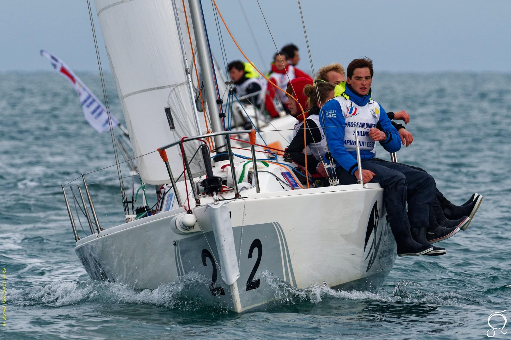
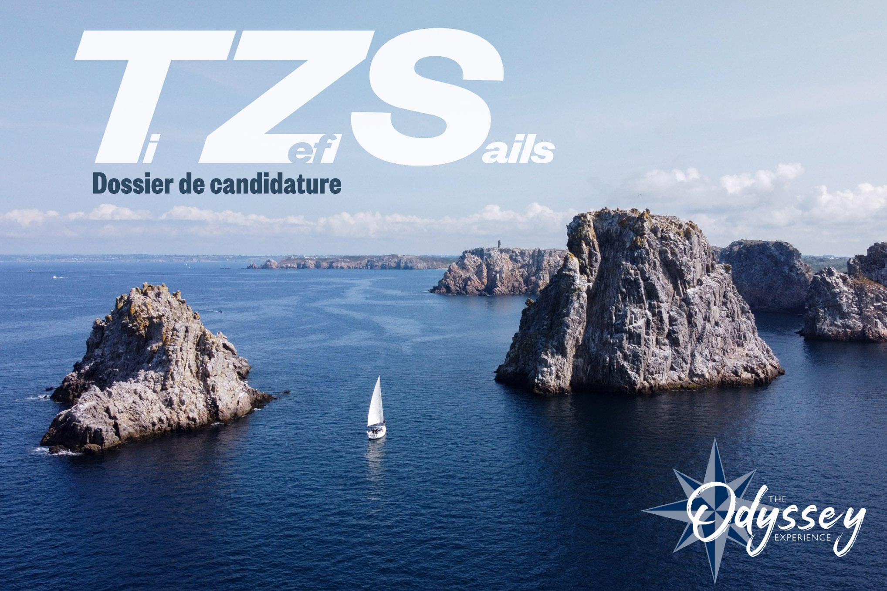
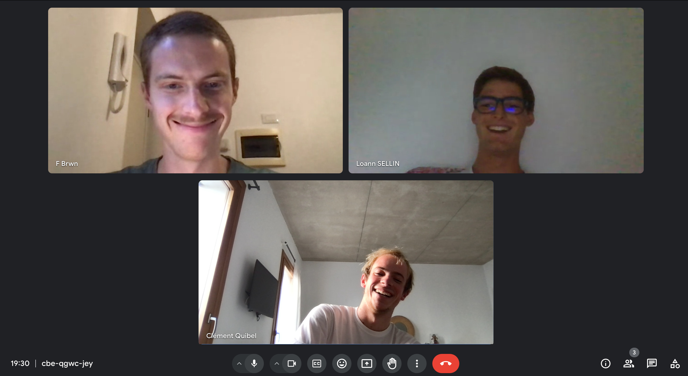

Le 22 août 2022, c’est la rentrée des premières années à l’ENSTA Bretagne, un école d’ingénieur généraliste implantée à Brest. Nous ne nous connaissons pas encore, mais nous nous retrouvons tous les 3 dans le même groupe de TD, le TD4.
Quelques semaines passent, et la Sailing Team (l’association de voile de l’école) nous rassemble autour d’une même passion pour ce sport. S’en viennent de nombreuses régates au cours de l’année durant lesquelles nous sommes souvent dans les mêmes équipages. A fortiori, une amitié se lie, nous travaillons ensemble en classe, pratiquons les mêmes activités et passons nos week ends sur les spots de surf ou en régate.

L’ENSTA Bretagne est une école formidable dans laquelle se rencontrent des passionnés de sports nautiques, la grande majorité des élèves a déjà surfé ou navigué au moins une fois dans sa vie. Le 25 septembre 2022, nous assistons au départ en transatlantique de deux binômes de notre école : Alice et Simon partent sur leur bateau nommé Vadrouille et Taina et Charlotte embarque sur Joe pour mener le projet Into the Wakes. Ce n’est pas rare dans cette école de voir naître des projets de voyage en voilier, à croire que les anciens donnent l’idée aux nouveaux venus. Ça n’a pas manqué pour nous, vivre ces départs nous a forcément planté une graine dans la tête sans nous en rendre compte.
La fin de l’année scolaire approche à grand pas et l’envie d’être en vacances se fait ressentir sur les bancs de l’amphi. Nous savions que le club nautique de la marine, dont nous étions membres, possédait quelques voiliers de croisière disponibles à la location à des prix dérisoires. C’est alors que tous les trois accompagnés de Julien, Maurine, Gaétan, Clémentine et Anthony (d’autres amis de notre école) nous avons décidé de louer un voilier de 11 mètres pour partir cinq jours à la découverte de la Bretagne sud !


Cette semaine fût pour la plupart d’entre nous la première fois que nous naviguions plus d’une journée, que nous faisions route de nuit et que nous devions gérer toutes les commodités de la vie à bord.
Au retour de cette incroyable aventure, nous, Clément, Félicien et Loann, accompagnés de Julien, avions eux le déclic ! Nous savions que nous voulions profiter de la possibilité de faire une pause dans nos études, et nous venions juste de trouver le format de cette année de césure : partir à l’aventure sur un voilier et se laisser aller où le vent nous mènera !
Après ce déclic, nous nous retrouvions séparés, chacun en vacances avec nos familles. Cette période aura été pour nous l’occasion de nous questionner personnellement sur notre réelle envie de mener à bien un tel projet. Il fallait ensuite déterminer plus exactement quelle forme nous souhaitions donner à cette expédition à la voile, quelle serait la destination, quel projet mener, comment financer le tout… Tant de questions que nous abordions au cours d’appels hebdomadaires en visio !
La rentrée est arrivée très vite et nous étions heureux de pouvoir enfin discuter de cette aventure tous les quatre en présentiel. Notre première décision fût la destination. D’un côté, nous voulions partir sur un trajet original comme une expédition dans le nord mais qui soit aussi accessible à notre niveau et nos compétences de jeunes navigateurs. Finalement, notre choix s’est porté sur la classique « boucle Atlantique » permettant de traverser un océan entier mais avec des vents plutôt favorables. Ce trajet est effectué par de nombreux plaisanciers tous les ans et il existe donc beaucoup de ressources pour nous préparer à ce voyage. Pour ce qui est de l’originalité, on y était pas vraiment ; mais on s’est dit que ce trajet était en quelque sorte un voyage initiatique dans la vie d’un voileux, et puis, nous apporterons notre touche d’originalité à ce voyage pour le rendre unique !
Nous étions également en quête de sens à donner à ce projet, nous ne voulions pas partir un an en vacances sans réel objectif hormis de profiter des jolis paysages. Avec une formation d’ingénieur, il nous semblait évident de mettre en application nos connaissances et compétences au profit de recherches scientifiques. En faisant parler de notre projet et de notre volonté d’embarquer des missions de recherche à bord, deux enseignants chercheurs de notre école nous ont proposé de les aider dans leurs travaux. Pierre Bosser nous a donc proposé un projet de collecte de données atmosphériques à l’aide d’une antenne satellite permettant de faire avancer la recherche sur le climat. Flore Samaran nous a ensuite exposé sa volonté de nous confier du matériel d’observation de cétacés dans l’optique d’agrandir et d’affiner les bases de données sur ces animaux marins. Par la suite, le bouche à oreille nous a amené à frapper à la porte de Météo France pour les aider dans leur projet e-Surfmar en déposant au large des bouées météo. Enfin, Loann avait repéré un association normande qui a pour but de récolter des prothèses pour les personnes amputées. Elle s’occupe de les envoyer en Gambie via les plaisanciers qui descendent vers le sud. Après un simple coup de téléphone à Nav’Solidaire, nous faisions partie de cette mission !
Nous avions enfin trouvé le sens de cette aventure, il nous fallait maintenant trouver notre bateau et financer le projet !
Nous étions à la recherche d’un voilier pour partir. Fallait-il en acheter un, en louer un, s'en faire prêter un ? Nous avons longtemps exploré ces différentes pistes. Et puis, un jour, nous avons vu apparaître l’annonce d’un concours sur le compte Instagram de Jeanneau, le bien connu constructeur de bateaux de plaisance. La marque proposait aux étudiants de candidater avec un projet de voyage en voilier pour gagner un bateau pendant 1 an, le rêve ! Deux semaines plus tard, c'est le constructeur RM qui propose un concours similaire, ouvert à tous cette fois-ci. Nous avions donc une lueur d’espoir en nous et nous nous sommes penchés sur la rédaction de nos candidatures.

En parallèle, nous nous étions lancés dans la recherche de sponsors. Après avoir imprimé des dossiers, nous passions nos après-midi libres à sillonner les rues commerçantes de Brest à la recherche de partenaires financiers.
Cette période à durée de fin octobre 2023 à début mars 2024. Une période intense à dépenser notre énergie dans cette recherche de soutien et de bateau. Au mois de mars, le verdict tombe, nos deux candidatures aux concours sont refusées ! C’est la douche froide. Peu avant, Julien nous faisait part également de sa volonté de quitter l’aventure pour un autre projet davantage tourné vers la quête de vagues parfaites en Indonésie. Nous sommes à présent trois, sans bateau et sans sponsors… Nous sommes au mois de mars et dans deux mois nous partons à l’étranger pour y effectuer notre stage de deuxième année durant l’été.
Nous nous sommes ressaisis et avons décidé de chercher un bateau à acheter et à préparer pour la navigation au large. Entre temps, nous avions eu quelques réponses positives de sponsors, ces bonnes nouvelles nous ont permis de reprendre espoir en ce projet.


Nous avons donc contacté de nombreux propriétaires de bateaux en vente sur Leboncoin. Nous en avons visité près d’une dizaine mais malheureusement aucun d’entre eux ne semblait rentrer dans notre budget ou nous convenir. Finalement, le temps presse et nous nous faisons à l’évidence que nous n’aurons pas le temps de préparer un bateau avant notre départ en stage. Il nous fallait donc trouver un bateau déjà équipé même si cela faisait monter le budget. Seulement, les bateaux déjà équipés ne seront en vente qu’à partir de juillet/août au moment des retours de boucles Atlantique. Nous avions donc décidé de partir en stage sans acheter de bateau, en espérant en trouver un à notre retour en France fin août.
Fin avril, nous nous disons au revoir pour quatre mois. Clément part en stage à Majorque dans les Baléares, Félicien à Trieste en Italie et Loann à Gènes, en Italie également. Nous nous appelons presque tous les deux ou trois jours pour continuer la préparation du voyage. Nous avançons sur la création du site internet, de la charte graphique, nous nous renseignons sur les formalités administratives et les assurances. Le projet continue peu à peu son bout de chemin tant bien que mal.

Clément et Loann se retrouvent début juillet à La Rochelle pour participer aux championnats du monde de J80 sous les couleurs de notre école. L’occasion pour eux d’effectuer les vaccins nécessaires pour les destinations visées.
Nous entamons également de grandes listes de matériel nécessaire à la sécurité et à la vie à bord. Nous achetons quelques produits sur Leboncoin que nous faisons livrer en France chez nos parents en attendant de rentrer.
Finalement c’est au mois d’août que les choses se précisent, les voiliers rentrent de voyage et nous en repérons un qui nous convient plutôt bien. Après de nombreux appels en visio avec les propriétaires, nous tombons d’accord sur un prix et signons le compromis de vente sans avoir vu le bateau. Nous attendons de rentrer en France pour pouvoir signer la vente et ainsi commencer les travaux.
Fin août, nous rentrons en Bretagne, prêts à prendre possession de notre navire, avec une envie et une énergie folle de voir enfin notre projet se concrétiser après un an de préparation !
Découvrez la préparation du bateau dans notre vidéo YouTube.